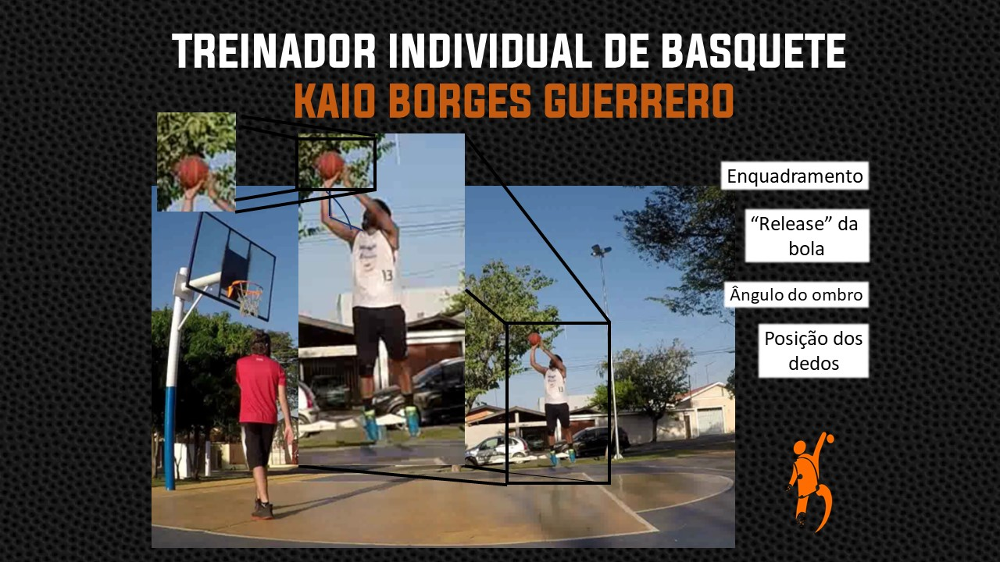
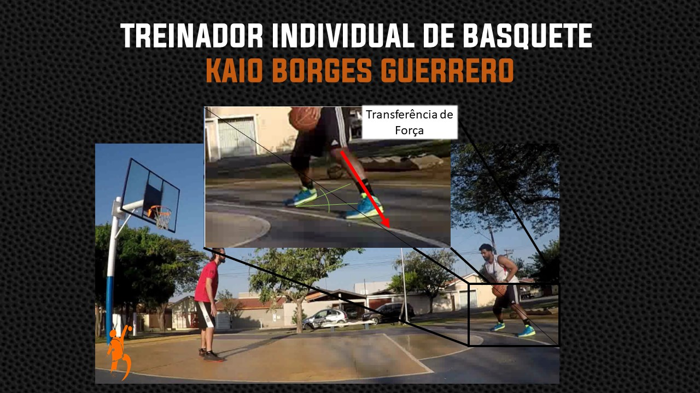

Já pensou no basquete como um complexo sistema cheio de detalhes?
Não sendo resumido apenas aos fundamentos primários da modalidade.
Te convido a pensar de uma outra perspectiva.
Sabe aquele momento que seu técnico ou técnica falava: "olhe pra cesta quando receber a bola",
"quando for
arremessar aponte os pés para cesta" e até mesmo "bata a bola olhando pra frente", pois bem, o treinador individualizado,
dependendo do nível do atleta, provavelmente focará em elementos mais específicos, como por exemplo, olhe para cesta,
MAS preste atenção no ângulo do seu corpo ao receber a bola. Enquadre seu corpo ao arremessar, PORÉM preste atenção
na amplitude de sua base, na aterrisagem, na absorção do impacto, e por aí vai.
Engana-se quem pensa que o treinador individualizado e o treinador do time (head coach) são a mesma coisa,
e eganana-se ainda mais quem compara um com o outro. Não estou criticando o trabalho do técnico do time, que fala para o atleta
enquadrar o corpo para arremessar, porém esse comando é direcionado para 10/12/15 ou até mesmo 20 atletas, o que dificulta
muito o trabalho de minúncias e defasagens finas de cada atleta. E justamente esse é o trabalho do treinador individualizado,
trabalhando em conjunto com o treinador e comissão técnica, na proporção de 1 atleta para 1 treinador, possíbilitando atenção
100% direcionada.

Não há atleta perfeito, sempre haverá um ajuste a ser feito, seja um detalhe de aplicação de força no dedinho
da mão direita na hora do arremesso de três pontos ou mesmo um novo movimento que acrescentaria no arcabouço do/da atleta, um giro,
uma finta, e por ai vai.
Em relação ao técnico individualizado, em alguns lugares desse mundão, é um profissional indispensável a todos os atletas
que estão ou almejam o topo. Como por exemplo, na liga mais assistida do mundo, todos os atletas possuem instruções
individualizadas. Claro, é uma realidade totalmente diferente, concordo, porém o conceito é o mesmo. Treino guiado, direcionado
e moldado às próprias defasagens podem surtir efeitos bem positivos na performance do/da atleta.
Sabendo de tudo isso, o que está esperando para melhorar suas habilidades?!?
Faça um treino teste, experimente mais essa ferramenta em busca do melhor desempenho.